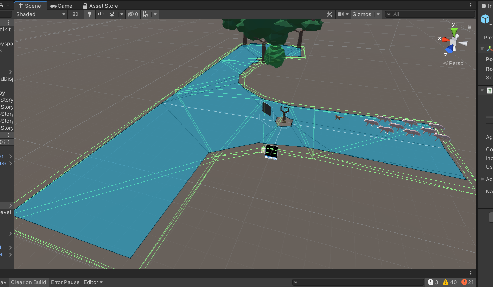
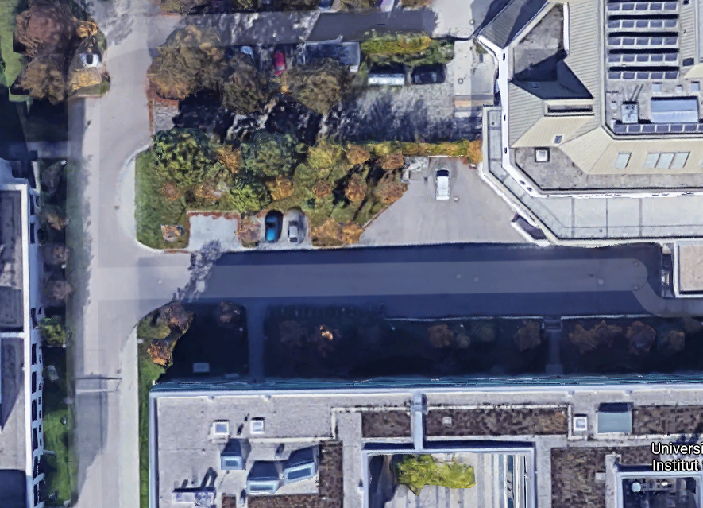
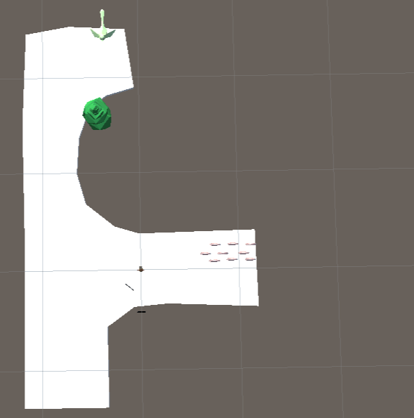
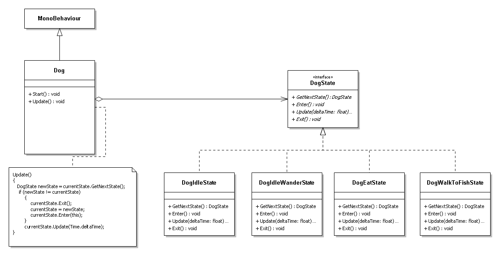
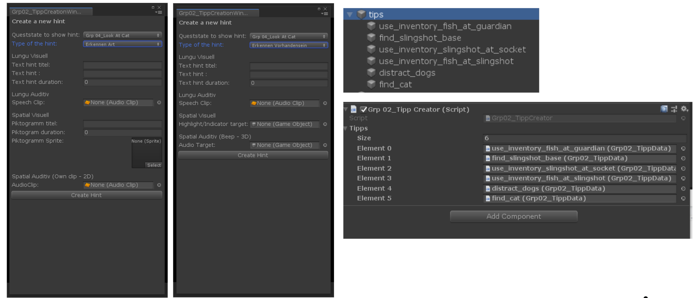
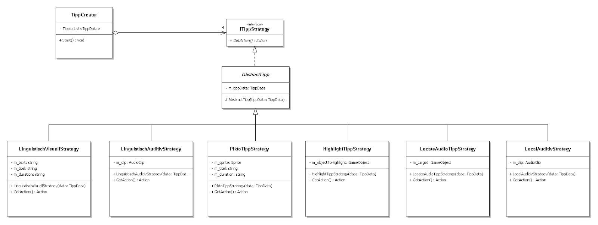
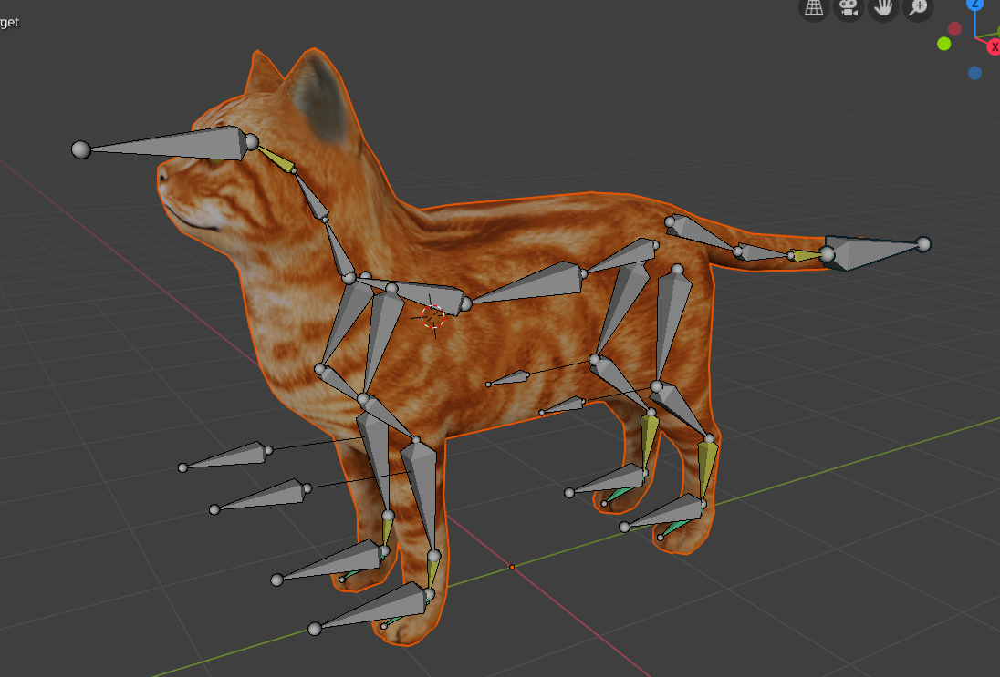
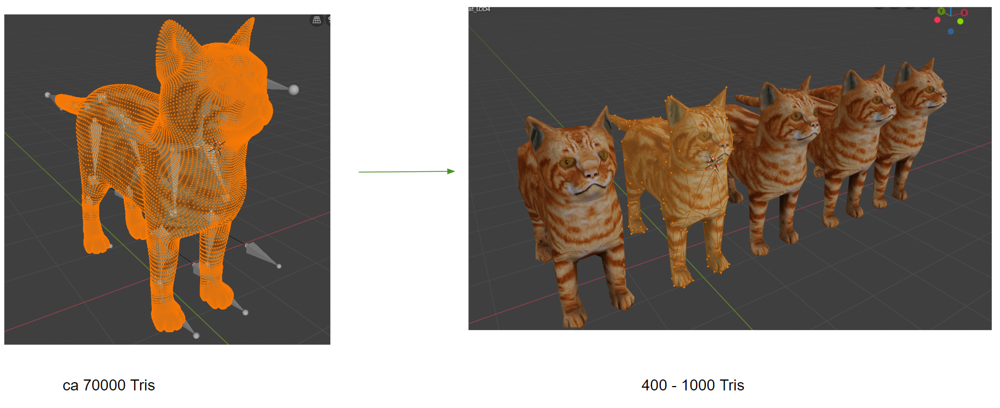

Adventured Reality

Verwendete Frameworks/Libs/Enigine
- Unity 2018.4.11f
- Microsoft Mixed Reality Toolkit
- Vuforia
Verwendete Third Part Software
- Blender
- Simplygon
- Photoshop
ForschungsFrage:
Wie können die Lernfähigkeit von Technologien und AR eingesetzt werden, um Probleme bei der Aushandlung von Nutzungsregeln mit medial augmentierten Objekten im öffentlichen Raum zu adressieren?
Überblick
In diesem Praktkum sollte für eine Nutzerstudie ein Immersives AR-Game für die MS HoloLens entwickelt werden. Das Spiel besteht aus mehreren Minispielen und Rätseln, die über den Campus der Uni Augsburg verteilt sind. Das Hauptziel dieses Projekts war mithilfe von bestärkendem Lernen zu lernen wann dem Spieler Tipps zur Lösung gegeben werden soll und von welcher Art diese sein sollen. Die Teilehmer des Praktikums wurden in insgesammt 4 Gruppen aufgeteilt. Jede dieser Gruppe sollte ein Minispiel/Rätsel erstellen und war für eine der folgenden Zusatzaufgaben verantwortlich.
- Gruppe1: Tracking
- Gruppe2: Allgemeines User Interface, Assets und andere Globale Interfaces
- Gruppe3: Reinfocement Learning -> Zeitpunkt für Tipps lernen
- Gruppe4: Reinfocement Learning -> Gestaltung/Art für Tipps lernen
Meine Aufgaben in diesem Projekt
Ich war in Grupp2 und somit neben dem Minispiel auch für das Globale UI verantwortlich.
Das Spiel
Die Story des Spieles ist, dass die bekannte Campus Cat der Uni Augsburg verschunden ist und
wiedergefunden werden muss. Der Spieler wird von Minispiel zu Minispiel geschickt um die Katze zu finden. Das Level meiner Gruppe ist das letzte in der Story und endet damit, dass die Katze gefunden wird.
Der Eingang zu unserem Level wird durch einen Wächter geschützt der den Spieler nur vorbei lässt, wenn er ihm einen Fisch bringt, den man im vorherigen Level erhalten kann.
Ist man am Wächter vorbei, sieht man eine Animation in der die Katze vor den Hunden flieht und sich auf deinem Baum versteckt.
In unserem Minispiel geht es nun darum mithilfe der im Level zuvor erhaltenen Fische und einer Schleuder, die Hunde lange genug abzulenken um die Katze vom
Baum holen zu können. Der Aufbau des Levels ist im ersten Bild auf dieser Seite zu sehen.
Für das Level wurde, mithilfe einer Satelitenaufnahme, in Blender ein teil eines Innenhofs der Uni nachgebaut. Dieses Mesh wurde unter anderem für das NavMesh der Hunde verwendet.


In der Game Szene war ich vor allem für die KI der Hunde, den GameManager, die Katzen Logik und für die Fische verantwortlich. Die Hunde KI wurde mit einer Statemachine umgesetzt:

Zusatzaufgaben (Globale Interfaces)
Bei den Zusatzaufgaben habe ich mich um folgende Punkte gekümmert:
- Globaler UI Manager
- Globaler Quest Manager
- Globaler Inventory Manager
Ein globales Interface durch das alle Entwickler einheitliche Text/Sprite Windows, Sprechblasen und Dialoge erzeugen können
Ein globales Interface durch das alle Gruppen den aktuellen fortschritt des Spieler abfragen oder bei wechsel durch Events darüber infomiert werden können
Ein globales Interface, durch das Gegenstände in das Inventar gelegt oder daraus entnommen werden können. Der Spieler kann die Gegenstände durch das Eventgetriebene Inventory UI benutzen oder einsehen
Um die Erstellung der Tipps für alle Gruppen zu erleichtern, habe ich auch ein Custom Editor Tool bzw. einen Workflow zur Erstellung von Tipps programmiert. Das Tool erstellt mit den durch die Gruppen bereitgestellten Daten, Callbacks die einem von der Reinfocement Gruppe benötigten Dictionary übergeben werden.


Weiteres..
Außerdem habe ich das 3D Model der Campus Cat gerigged, animiert und LODs von ihr erstellt

